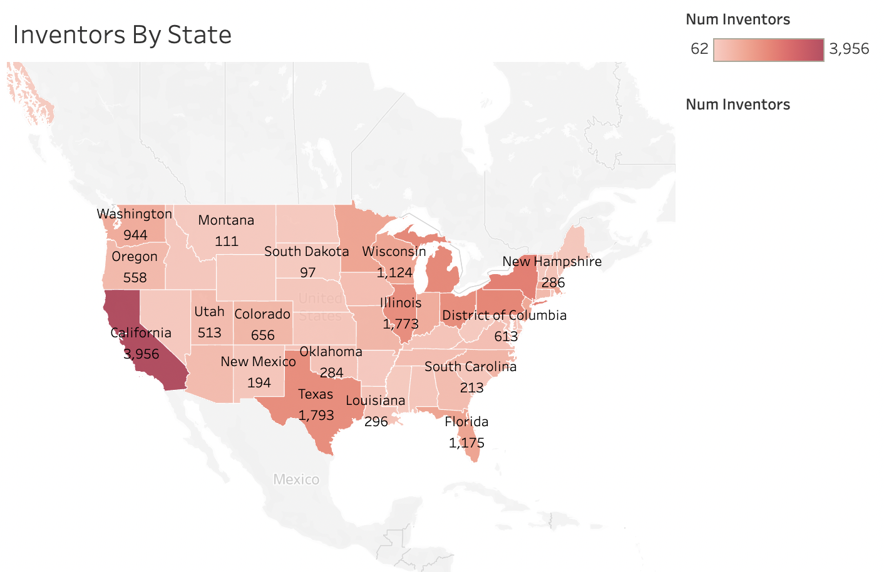
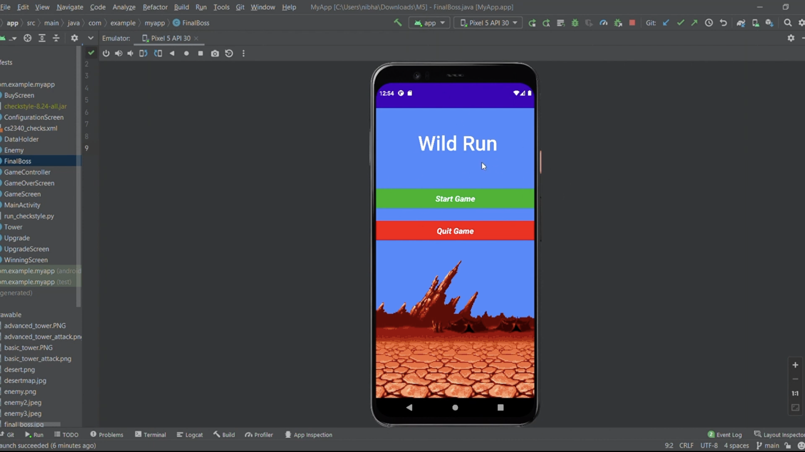

Projects
-

Skills: Tableau, HTML, CSS, React, Data Visualization Principles
For Georgia Tech's CS 6730 course project, I created an interactive scrollytelling website "Charting the Course of Innovation: Insights into Inventor Success Factors". This project explores the patterns and drivers behind inventor success using data from U.S. patent filings. Built using React, HTML, and CSS, the site integrates Tableau dashboards to guide users through a narrative that examines how factors like geographic location, gender distribution, industry domains, and collaboration influence innovation outcomes. Each section of the story was designed to balance visual appeal with clarity, enabling users to engage meaningfully with the data. By applying data visualization principles and scollytelling techniques, we aimed to create an insightful and accessible experience for a broad audience.
-

Skills: Mobile Application Development, Android Studio Programming, Graphic Design
For Georgia Tech's CS 2340 class, I created and implemented a tower defense game using Android Studio. The game featured three levels of difficulty, allowing players to choose their preferred level of challenge. To make the gameplay engaging, I implemented enemy attack functionality, where waves of enemies would attempt to reach the player's base and inflict damage. Players had to strategically place towers along the enemy's path to defend their base and prevent the enemies from reaching it. In the game, players had the option to purchase different types of towers with varying abilities and strengths. The interface was designed to be visually appealing and easy to navigate, providing a seamless and enjoyable gaming experience for the players.
-
Skills: Machine Learning, Neural Nets, LSTM, Naive Bayes, Classifiers
I trained a machine learning algorithm using LSTM neural networks, Naive Bayes, and other neural net classification algorithms to develop a recipe generating system. The goal of the system was to generate personalized recipes for users based on their favorite foods and the ingredients they had available. I leveraged multiple datasets containing recipe information, including ingredients, cooking methods, and user preferences. By utilizing these datasets, I aimed to enhance the algorithm's accuracy and effectiveness in generating relevant and appealing recipes. I applied techniques such as data preprocessing, feature engineering, and model training to develop a robust recipe generation system. By combining the power of machine learning algorithms and natural language processing, I was able to create a solution that could provide users with personalized recipe recommendations based on their specific tastes and available ingredients.
-
Skills: HTML, CSS, Node.js, React, SQL, Web Design, Figma
I developed a comprehensive website using HTML, CSS, JavaScript, Node.js, and SQL that served as a platform for a Pay-For-A's service. The primary focus of the website was to connect students with tutors whom they could hire for academic assistance. One of the key features of the website was the login and logout functionality, allowing users to securely access their accounts and manage their tutoring sessions. To support the website's functionality, I implemented a robust backend using Node.js. The backend facilitated the interaction between the frontend and the database, allowing seamless communication and data management. It played a vital role in handling user requests, managing session data, and ensuring a smooth user experience. The website also incorporated a payment service. This enabled students to conveniently make payments for the tutoring services they received. The integration of a secure and reliable payment system enhanced the overall user experience and provided a seamless transaction process. To store and manage user data, I utilized SQL, a powerful database management system. By designing and implementing an efficient database schema, I ensured the proper storage and retrieval of user information, tutor profiles, and transaction records.
-
Skills: C, GBA, Graphic Design
I developed an interactive C program specifically tailored for the Game Boy Advance emulator, demonstrating my expertise in low-level programming with C. This project showcased my ability to work at the hardware level, as I utilized techniques like accessing hard-coded memory addresses to directly interface with the emulator's components. By leveraging such techniques, I created a seamless gaming experience with smooth graphics rendering, responsive input handling, and immersive audio playback. To optimize performance, I employed Direct Memory Access (DMA) to efficiently transfer data between memory sections, ensuring minimal slowdowns and maximizing overall gameplay quality. This project highlighted my proficiency in low-level programming, resource management, and my ability to create engaging experiences within hardware limitations.